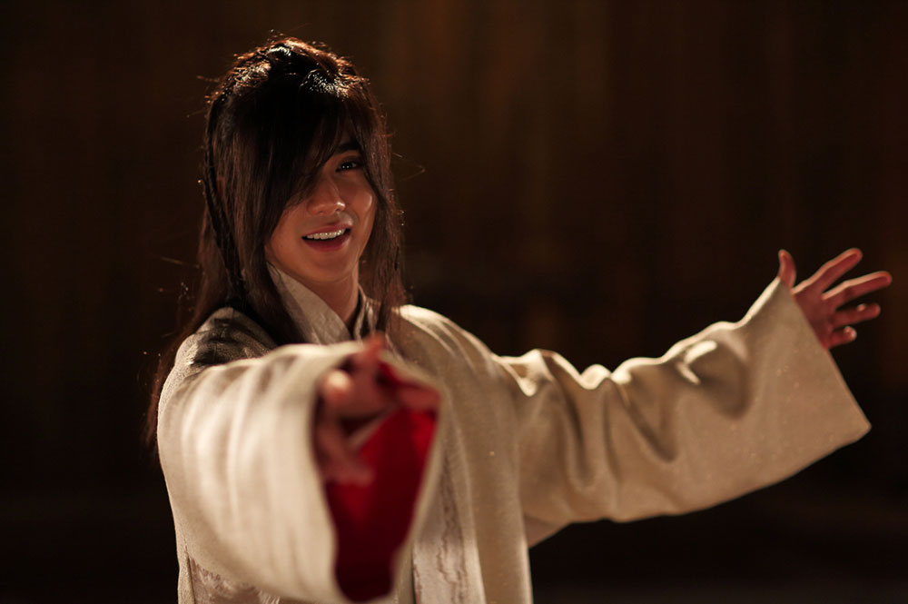
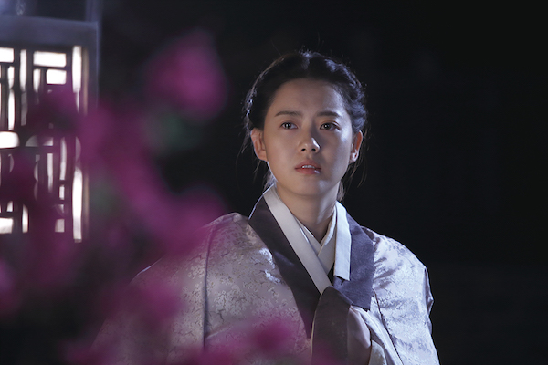
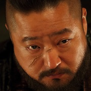
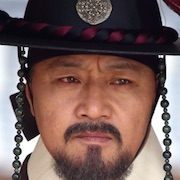
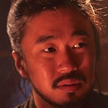
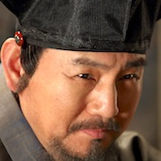

조선마술사 The Magician (2015)
Main Cast
유승호 Yoo Seung-Ho
| Profile | |
|---|---|
| Image sourced from Kpop Map | |
| Name | Yoo Seung Ho |
| Hangul | 유승호 |
| Birthdate | 17th Augsust 1993 |
| Birthplace | Jakjeon-dong, Incheon, South Korea |
| Height | 175cm (5'7 feet) |
Yoo Seung-Ho is a South Korean actor who rose to fame as a child actor in the film The Way Home (2002). Since then, he has starred in many television series and movie films as a child and teenager.
After his two-year mandatory military service, he starred in the legal drama Remember (2015), historical films Joseon Magician (2015) and Seondal: The Man Who Sells the River (2016) as well as historical drama The Emperor: Owner of the Mask (2017), romance comedy series I'm Not a Robot (2017), and SBS's high school drama My Strange Hero (2018).
Image Gallery
Image sourced from Kpop World
Image sourced from YSH Biased
Image sourced from drnoorhazfalinda
고아라 Go Ara
| Profile | |
|---|---|
| Image sourced from Facebook | |
| Name | Go Ara |
| Hangul | 고아라 |
| Birthdate | 11th February 1990 |
| Birthplace | Jinju, South Gyeongsang Province, South Korea |
| Height | 170cm (5'5 feet) |
Go Ara is a South Korean actress and model. She is best known for starring in the television series Sharp (2003), Reply 1994 (2013), You're All Surrounded (2014), Hwarang: The Poet Warrior Youth (2016–17), Black (2017), Ms. Hammurabi (2018), Haechi (2019) and Do Do Sol Sol La La Sol (2020).
Go was born in Jinju, South Gyeongsang, South Korea. At a young age, she constantly moved around Korea because her father was a soldier. When she was in junior high, she was recommended by a friend to audition for the talent agency SM Entertainment. In 2003, she became the winner of the SM Entertainment Teen Model Contest.
Image Gallery
Image sourced from Asian Wiki
Image sourced from spiderliliez
Image sourced from spiderliliez
Supporting Cast
|  | ||
| Jo Yoon-Hee | Kwak Do-Won | Park Chul-Min |
| Bo-Eum | Gwi-Mol | Ki-Tak |
|  |  |  |
| Lee Kyoung-Young | Jo Dal-Hwan | Son Byung-Ho |
| Ahn Dong-Whi | Deok-Hu | Kim Gap-Seo |
Images sourced from: Asian Wiki